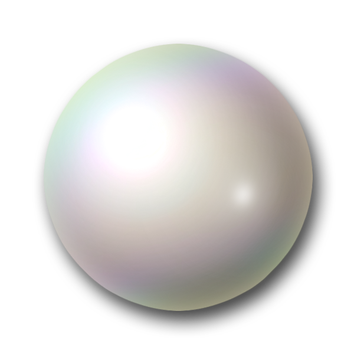
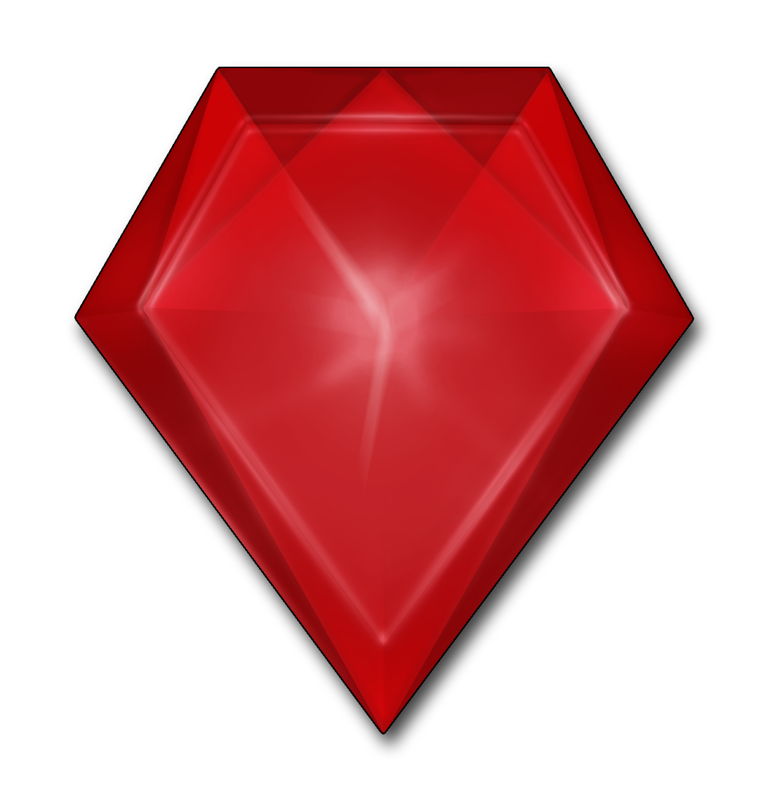

Was ist Dragako?
Dragako ist ein dauerhaft begleitetes Projekt des FaraFIN, bei
dem die Studierenden in vier verschiedene Häuser anhand ihrer persönliche Interessen und Charakterzügen
eingteilt werden. In diesen Häusern finden Sie studiengangübergreifend Kontakt zu anderen Studierenden
, organisieren eigenverantwortlich kleinere Projekte und Veranstaltungen und kämpfen gemeinsam um den
Gesamtsieg. Dafür können sie Einzel- und Teamleistungen einreichen und damit Punkte für ihr Haus generieren.
Auf der zukünftig stets aktuellen Rangliste sind die aktuellen Punktestände der einzelnen Häuser zu sehen.
Am Ende des Semesters wird das Siegerhaus gekührt und bekommt einen Preis sowie für ein Semester
Vergünstigungen verschiedenster Art.
Das Haus EMERALD
Stets neugierig sind Emerald sehr ehrgeizige Menschen, die ihre Erfahrungen gerne mit
Anderen Teilen. Ein Emerald weiß meist was er will und scheut deshalb nicht, Verantwortung
für Andere zu übernehmen. Angehörige dieses Hauses werden gern um ihre Meinung gefragt, doch
hören sie auch meistens lieber nur zu und beobachten.
Hallo
Das Haus OPAL
Der Opal polarisiert durch seine häufig aufgeweckte Art. Ein Opal versucht einen
Ausgleich zu finden zwischen seinen Pflichtaktivitäten und seinen Hobbies. Opal haben viele
Interessen und scheuen sich nicht vor neuen Kontakten. Auch wenn sie tief in ihrem Inneren
manchmal nachdenklich sind, zeigen sie nach Außen einen lebensfreudigen Charakter.

Das Haus PEARL
Pearl agieren leidenschaftlich und engagiert. Im Zentrum ihres Handelns steht meist
das Wohl der Gemeinheit. Daher ist es in ihren Augen nicht verwerflich, ihre Stellung
auch mal für eigene Vorteile zu nutzen. Ein Pearl ist bestrebt bei seinen Mitmenschen
Sympathie zu wecken. Auch wenn er sich zu Neuem hingezogen fühlt und experimentierfreudig
ist, genießt er geregelte Abläufe.

Das Haus RUBY
Ruby sind weniger die Grübler, sondern folgen meistens ihrem Herzen und
zur Tat. Dabei sind sie keinesfalls unvorsichtige Impulsivtäter, sondern
behalten auch in brenzligen Situationen stets einen klaren Kopf.
Ein Ruby hebt sich von der Masse ab und durchbricht Traditionen, um den
Fortschritt zu gewährleisten. Auch wenn er ab und zu in sich gekehrt ist, sind
Ruby keineswegs auf den Mund gefallen und sind bei anderen Menschen recht beliebt.